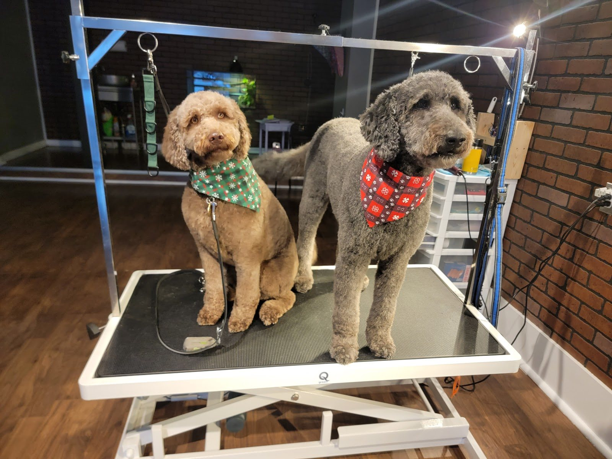

Full grooms
Bath, haircut and tidy for every size, from bichons and doodles to goldens, a Bernese and a collie.
Source: Google reviews

Dog & cat grooming · Arnprior, Ontario
Full grooms, puppy cuts, nail trims and cat grooms from a small Arnprior team that customers say is patient with nervous, senior and “dramatic” pets alike.
Tuesday to Friday, 9:30 a.m. to 4 p.m. (Google). Walk-ins for nail trims, per a customer review.
Services
Built only from what customers describe in reviews and what local directories list. No price list is published, so call for a quote.
Bath, haircut and tidy for every size, from bichons and doodles to goldens, a Bernese and a collie.
Source: Google reviews
A reviewer’s stressed cat “actually enjoyed it.” Listing photos include a Persian and a ginger cat.
Source: Google review via exa.ai copy; listing photos
Including walk-ins: “I really liked that we could just walk in for the service.”
Source: Mikayla Davis, Google
Requested and delivered for two doodles groomed for the holidays.
Source: Ani Tourian, Google
Careful handling for dogs with weak hind legs and nerves.
Source: Sabrina Sng, Google
Dogs are groomed in view, “set up even with a view for the dogs to watch people walking on the street.”
Source: Alysia Holly, Google
Photos
Photos from the public Google listing, including photos customers posted with their reviews. Tap to enlarge.
Reviews
4.8 ★ from 83 Google reviews (checked Oct 31, 2026). “Via exa.ai copy” means a public copy of the Google listing that doesn’t show reviewer names. Quotes are word for word; “…” marks a trim.
★★★★★
“Kendra and her team are absolutely amazing at what they do. We've been to a handful of groomers over the years and I must say, Kendra puts so much effort and consideration into each of her clients and their needs. As soon as you walk in you can feel the love and care. We have a super sensitive girlie, and Kendra has been so attentive to her and her needs. Everything is so transparent too, she explained their whole process and has educated me a time or two when I have questions. I also love that the dogs are groomed out in the open so anyone can see the team working, their care, and techniques (set up even with a view for the dogs to watch people walking on the street). I would highly recommend sPAW BAR to anyone looking for top tier groomers.”
“We drive from Almonte to get our Collie groomed here. They are amazing! So friendly and very good with explaining things to us when it’s time to pick him up”
“The groomer is THE best...my cat came in very stressed from a car ride. The groomer was so relaxed and gentle that my cat -who normally hates being groomed- actually enjoyed it! It was such a positive experience all around. Groomer was very kind and accommodating.”
★★★★★
“I brought my very thick coated golden retriever for a full groom and I was beyond impressed! Leo came home smelling and looking so good. They were so good with my boy that we went ahead and booked another groom in 3 months. We also took our very sweet (but dramatic) beagle, Marlo for a nail trim. She is a tough cookie when it comes to nail trims but they did an amazing job and were so patient with her. I really liked that we could just walk in for the service. 10/10 would recommend.”
★★★★★
“Thank you Starla, Kendra and Paula on grooming Bella and Sophie and being so patience and caring. Both have weak hind legs and the Spaw team are always careful when handling them. Both are extremely anxious senior dogs whom are not a fan of grooming but the Spaw team is always gentle with them. Amazing team who listen. Highly recommended!”
“Cannot recommend this place enough! They squeezed us in very last minute and went above and beyond. Staff were very kind and knowledgeable, making my boy and i feel very welcome by sending me videos and giving him all the love.. not to mention his very clean groom. Thank you guys so much!!”
★★★★★
“Sleeman and Fireball were groomed for the Holidays and they look amazing. They are both doodles and I always like the puppy cut but always end up with something we don’t like. The dogs look amazing they were both happy and exciting. The location was very clean and the owners are both very friendly. Will definitely be taking my dogs back. Thank you for taking such nice care of my dogs.”
“Just picked up our big boy whom is a Bernese Mountain Dog from his very first visit to the sPAW Bar, and I couldn’t be happier! As soon as he was dropped off, it was clear he felt the warm, welcoming energy of the space — he understood right away that he was safe and cared for. When I picked him up, he was not only beautifully groomed for summer (goodbye, excess hair!) but truly shining with happiness. … We will absolutely be back!”
★★★★★
“My Bichon seems to love it here. He has a problem with tear stains and he always looks better coming home from a groom. Also love the cute lil bandanas they give out. The team is so lovely and very welcoming, I’m happy to have found an amazing grooming place! ⭐️”
Hours from the Google listing, checked Oct 31, 2026. The Downtown Arnprior directory agrees. The exa.ai copy of the listing also shows Saturday 9:30–4, so call before a Saturday visit.
75 Elgin St W, Arnprior, ON K7S 3T9
Address per Google (Oct 31, 2026). Older listings show 50 Madawaska St, Arnprior K7S 1R9. Phone is the same everywhere.